シルバーセカンド開発日誌
■
2021-09-18 (土) 片道勇者2 【53】 ネムリ▼
休養しつつお仕事を進めつつで徐々に動き始めています。
ということで今回は開発中の『片道勇者2』から立ち絵を1枚ご紹介！
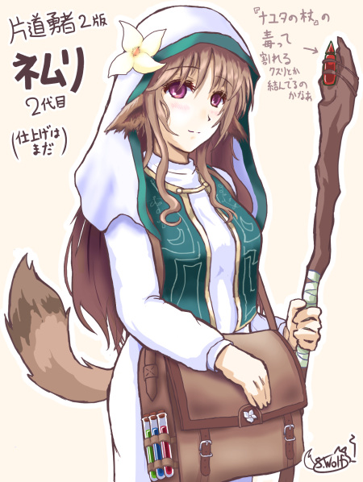
今回ご紹介するのは片道勇者2用のネムリ！ といっても見た目はほぼ同じ！
彼女は『片道勇者1』に登場した先代ネムリの孫で、子供～孫たちの中で
ゆいいつ半獣人として生まれてしまったので、なんとか迫害を受けにくいようにと、
「英雄の1人の子孫」という肩書きを背負わされて育てられました。
ゆえに服装も、英雄物語の本に描かれた先代ネムリに大きく寄せています。
1のネムリよりもプレッシャーを抱えた人生を送っていそうですね。
今作のネムリは「癒し手組織」の一員で、
「一流の癒し手の証である花飾り」を付けており、
曾祖母の代から受け継がれた『ナユタの杖』を持っています。
『ナユタの杖』は前作にもこっそり登場してた、まれに毒を与える半隠しアイテムです。
成長の選択肢次第で毒を与えてくれたりするかもしれません。
【独り言 NPCヒーラーの性能】
『片道勇者1』でもそうだったのですが、
NPCヒーラーのバランス調整は悩みどころです。
ローグライクゲームは実質最大HPが倍あるだけでも地味にめちゃめちゃ強いので、
ターン数を消費しない、補給が容易な回復の入れ方って難しい！
（ザコ戦なら1戦闘内で耐えられるターン数が
2から3ターンに伸びるだけでもすごく強い）
他のゲームでも、強い自動ヒーラーってあんまり出てこないと思いますが、
なぜかというとこの系統のキャラを強くしすぎると
一気に無敵っぽさが出てしまうからですね。
『片道勇者1』内ですら、城で仲間にできた序盤のネムリは尋常じゃなく強い！
そのため、『片道勇者1』では24時間以内の
ネムリの回復回数に制限があったりしました。
とはいえ、最後まで固定値で40点回復しかしなかったので、
対策も兼ねて途中でアタッカーに転向する流れが用意されていましたね。
いま思うと、なぜ回復量が成長しなかったのか分かりませんが！
スクリプトの都合で入れられなかっただけかも。
2ではネムリの成長につれてちょっとずつでも回復量が伸びていったり、
レベルアップで別の状態異常技を覚えたりしても楽しそうだと思います。
節目で2択から成長を選べるだけでちょっと面白い！
1では無思考で作っていた場所にも、最適解に近づけるための
楽しい判断ポイントを色々と生み出していきたいですね。■
2021-08-07 (土) 片道勇者2【52】 旧作アイテム実装と新機能▼【片道勇者2 旧作アイテム実装と】
ただいま【第13回ウディコン】開催中なのでそちらもぜひ遊んでください！
主催者である都合上、特定の作品が有利にならないように
おすすめ作品やおすすめ配信は紹介しにくい立場ですが、
色んな方が実況配信してくださったりもしています。それを見るのも楽しいでしょう。
一方で『片道勇者2』もしっかり開発進行中です！
旧作アイテムの実装は一通り終了しました。
今回は見た目が変わった点や搭載した新機能などをご紹介！
◆魔法の橋を作成
今作はアニメーションエフェクト入りで魔法感が分かりやすくなりした。

『片道勇者2』では命中率の概念が希薄になったので、
この地形に乗っていると攻撃力と防御力にボーナスが入る扱いになっています。
◆開錠ダメージの実装
今作はデッキ構築ゲーである都合上、
前作みたいに「開錠」スキル連打とかできないので、『片道勇者2』の
「開錠」スキルは宝箱への防御無視ダメージ処理にすることを考えています。
（硬すぎる宝箱にも10ダメージ確定で入るなど）

あとついでに、パッシブ効果として
「『開錠』カードが『デッキ内』に含まれているだけで
通常攻撃にも開錠ダメージがXずつ加算される」
みたいな設定をつけてみたので、
その手の職業なら殴るだけでも宝箱を開けやすくなるはず！
「今ちゃんと開錠持ってるぜー」感を出していきたいですね。
◆引火効果を作成
前作では炎ダメージを受けたときに一定確率で
草が燃えたり爆弾が爆発したりしましたが、今回もこの要素が入ります。
といっても今作では「手札」に来ているアイテムしか燃える対象にならないので、
前作よりは爆弾なども持ちやすくなるはずです。
そもそもの話、燃える可能性のあるアイテムは有用性を激しく上げて
リスクとリターンがいくらか釣り合うようにしたいです。
強烈な効果の「草」アイテムがいっぱいあってもいいはずですし、
誘爆の危険がある「エルザイト爆弾」はドラゴンだって一発で倒せる程度には
強くてもいい気がします。
もちろん、持ちたくない人は持たないのが安全！
◆時間経過によるアイテム変化処理を作成
前作でいうところの食料品が「腐敗」する処理です。
といっても、今作は「黒ずんだナユタの実」を
ずっと持ってると「ナユタの酒」になるといった感じで、
一方的に損な要素は減らそうと考えています。
他にも、今回は持ってるだけで成長するアイテムを色々作ってみたいです。
それも同じ『腐敗』処理で作れますからね！
たとえば「一定日数ごとにランダムな『盾』が生えてきて採取できる鉢植え」
があるとか、
「竜の卵」をずっと持ってると段階アップしていって孵化して協力NPCが増えるとか、
そういうのも作れるはず！
（ただし、腐敗を防止する『氷の結晶』を持っていると
それらも育たなくなります。温まらないのでそれっぽい）
◆デッキ内カードのパッシブ効果を実装
デッキ内にあるだけで（手札に来てなくても）効果を発揮する
パッシブ効果を実装しました。これで
「スキル【開錠】 使っても効果があるが、デッキ内に持っているだけでも
宝箱に物理ダメージを与えるとき開錠ダメージ＋1」
「スキル【登山マスター】 デッキ内にあれば山に入るときの必要ターン数が1減る」
「アイテム【復活の女神像】 デッキ内にあれば死亡時に自動でHPが全回復」
みたいな効果のカードも作れそうです。
「特別な状況でしか効果を発揮しない（通常時は邪魔になる）カード」を
どれだけデッキ内に入れるか、というのも考え所になるでしょう。
という感じで、前作再現用、ないし今作専用の新機能も続々と搭載中です。
考えれば色々他のアイデアも思いつきそうなので、
どんどんネタ出ししていきたいですね。 ■
2021-06-26 (土) 片道勇者2【52】 細かい機能実装・続▼
今回は前回のアイテム実装の続きです。
しばらく体調が悪かったので進みはほどほどです。
ウディコン前はいつも体調が悪くて「これで大丈夫かー！？」
と例年思っているので、おそらく気候的なものだと思います。
早く夏毛になりたい！
で、今回は新アイテム搭載につき、
必要な新処理が色々あったので引き続き搭載中です。
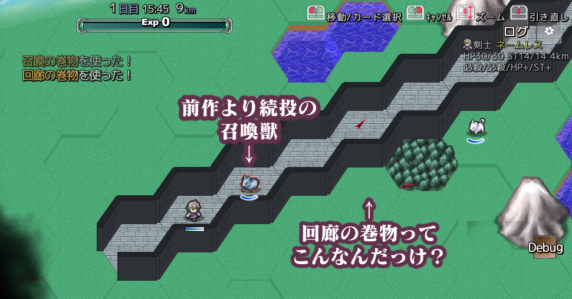
●「混乱」処理の実装
造りが変わっていたので作るのが地味に大変だった処理です。
特に「主人公」の混乱処理が！
混乱してるのに思い通りの方向に攻撃・移動できてしまうようなバグが
出ちゃってたら確実に直されますのでご容赦ください。
とはいえ、「混乱」をしてくる敵はさすがにあんまり作らないとは思いますけどね。
（強制スクロールRPGという性質上、攻撃や移動の方向が定まらなくなるのは
どんな状態異常よりも致命的なため）
●「移動不能」処理の実装
プレイヤー側はあんまり喰らわないと思いますが、敵にはよく使うやつです。
「触手の草」は今回も登場予定です。
●経験値カード合成処理の実装
カード周りの管理はバグバグになりやすいので実装にやたら苦戦しました。
α版を遊んだ方にしか分からない言い方になってしまいますが、
2枚の経験値カードを1つに合体させられるアイテムが登場します。
レベルアップが楽になります。
流用すれば「手持ちのアイテムを合成」する処理も作れるでしょう。
このゲーム性だと複数アイテムの合成難易度は高くなりそうなので
「癒しの草」を「癒しのアンプル」に変えるくらいの簡単さじゃないとイマイチそうですけどね。
●召喚系アイテムの搭載
前作同様、召喚獣を呼び出す巻物とか作れるようになりました。
ついでに「同じキャラは1体しか出現させられない処理」も一緒に搭載！
てっきり入ってるものかと思ったらまだ入ってなかったので、
何かの間違いで魔王がいっぱい出現するところでした。
※実は前作でも、「占い師アウリス」や仲間キャラなどの固有名キャラは
同じ範囲には2体登場しないようになっています。
それはこの「同じキャラ1体出現制限」処理によるものです。
●マップ召喚系アイテムの搭載
「引きこもりの巻物」（自分一人だけ囲われた部屋を作る）、
「回廊の巻物」（左右を壁に挟まれた長い一本道を作る）は今回も登場！
これらは前作同様、「封印の神殿」（破壊不能な壁で囲われている）の壁も
置き換えられる、または壁を貫くことができます。
他にも「泉の巻物」や「溶岩の巻物」は続投です。
溶岩はともかく、「泉の巻物」は疑似「引きこもりの巻物」なので
地味に緊急対応力が高くて好きです。
●1280×720画面サイズ対応、進行中
今回は全アイコンサイズを同じサイズに標準化して扱いやすくしたり、
文字サイズの変更がうまくいってないところを見つけては修正する作業です。
さすがに画面サイズ変更は一筋縄ではいかないのでしばらく続きそうです。
といった感じでいちおうじわじわ実装進行中！
来月にはウディコンも始まるのでそれも楽しみにつつ、
やれることを進めていきます！■
2021-06-12 (土) 片道勇者2【51】 アイテム等色々搭載▼
黙々と地味な処理を搭載中です。
ここが長いし報告する中味もあんまりない部分！
◆建物が外から見えなくなる処理を搭載
前作通り、ダンジョンは外から見えなくなります（近付くと隣マスは見える）
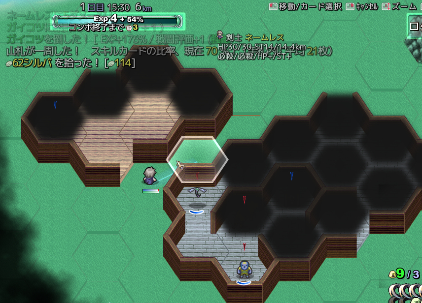
◆基本的なアイテムを搭載し始め！
『片道勇者プラス』から110種類ほどもらってきたので順次搭載中。
アイテムを実装するのに足りない機能もここで洗い出して、追加していきます。
◆NPCのいる場所を指示するマーカー機能を搭載
狩人などにすると敵の方角が分かるといった、前にもあったやつです。
◆「地図」を使うと遠くからでも施設名が分かる機能
今作はひとまず施設の位置が（敵位置みたく）マーカーで表示されます。
施設名が分からない状態だとアイコン表現だけになり、
「何か施設があるのは分かるが街かダンジョンかは不明」という状態になります。
◆装備による「集中度」底上げ機能を実装
今作では「集中」が上がる装備を着けていると、
ターンごとに「集中」の値が一定値まで「引き上げ」られます。
「集中」はフォース系のスキルを使うのに消費されます。
（今のところ集中が3たまっていれば「火炎」を連続3発撃てる）
◆「銃」を実装
前作の銃は「意志力」がダメージに繋がる武器でしたが、今作では筋力を問わず、
「クリティカル率/2」が攻撃力に加算される武器となる予定です。
「商人」クラスが主に使う予定。
◆特殊な装備を着けたら「状態」が付いたり消えたりする機能を追加
当たり前の処理ですが必要です！
「状態（異常）」とは表向きには「毒」や「混乱」などを指しますが、
装備を着けたときの「炎防御50％」なども
内部的には「状態」として処理されています。
◆近接武器と遠隔武器を区分け
前作では「（近接）攻撃力」と「射撃攻撃力」がありましたが、今作でも近接と遠隔武器は区別されます。
武器とスキルが合ってなければ攻撃力は減少し、たとえば
・弓などの「射撃」武器を持ってるときの「近接スキル」は「素手」相当に
・剣などの「近接」武器を持ってるときの
「遠隔スキル」は「石投げ」（威力は素手＋α）
などで代用されます。
◆ゲーム画面を960×540 1280×720に変更
まだ途中ですが、片道2を作ってる最中に片道勇者プラスがSwitch対応になったので
Switchでぴったり表示できるように1280×720に切り替えました。
PCでも文字を大きくできるので、多少は文字が読みやすくなるでしょう。
（Switch版は最初から小さい画面でも読めるサイズにしておくか、
文字を大きくできるオプションを入ておきたいですね）
【ここから先の直近の目標】
◆ゲーム画面を960×540→1280×720に変更したので画像の再整理。
◆前作アイテム案の残りを全実装。その途上で実装に必要な機能を洗い出して搭載。
◆作成したアイテムを「ランダムドロップテーブル」に仮設定。
◆「建物」のアイデア考える。といっても、まずは前作プラス版から採用予定。
◆建物に入れる「NPC」のアイデアを考える。これも前作通りのは前作から採用。
◆「剣士」のスキルと「騎士」のスキルと「一般」スキルをアイデアが出た分だけ一通り搭載。
ここまででひとまず2つのクラスで最初から最後までのゲームプレイが遊べる
『最小の片道勇者2』が完成するはず。
◆まだ前作から持ってきただけなので『片道勇者2』ならではのアイテム案や
敵の案などももちろん考えていく。
◆ここまで追加した数百個分くらいのデータのカード絵を
まだ描いてないので必死で描く。
◆キャラのストーリーも並行して考え始める。
◆メインストーリーもぼんやりした案だけなのでまとめ始める。
キャラではない「メインストーリー」の方はひとまず、
「XX倒せ！」や「XXアンロックするためにがんばれ！（意訳）」
みたいな感じでいい気はしています。
という感じです。
見た目に面白い更新はないですが日々少しずつでも作業中です。■
2021-05-29 (土) 片道勇者2【50】 まずは最小完成へ▼【片道勇者2開発 まずは最小完成へ】
現在は、例の「完成させる作り方」をもとに、まずは
「最小のスタートからエンドまでの流れ（↓の②番）」を作ろうという
目標に向けて作業しています！
↓
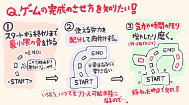
その中でエンディング用の絵も何枚か作成したので、今回はその中から新ネムリ絵をご紹介！
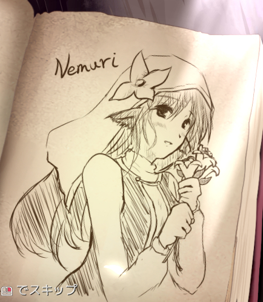
TRPGや、リメイク版への出張版ネムリの頭にだいたい花がくっついてたので、
それにならって2代目ネムリもベールに花が付くことになりました。
その他のデザインなどは1のネムリ（たぶん2ネムリのおばあちゃん）とほとんど同じです。
そういえば特に重要ではない話ですが、実は1のネムリには
体格がけっこういい設定とかありました。
↓
ベスト着てない版の片道勇者1ネムリ。
ネムリが羽織ってるベストは人からジロジロ見られないために
着ているという設定がありました。
【データを考えてみた】
『片道勇者2』はデッキ構築型要素を盛り込むということで、
これまでよりたくさんの種類のスキルが出てくる予定です。
デッキ構築という都合上、1枚がめちゃつよでもあくまで全体のうちの1枚なので、
そう簡単にバランス崩壊しないのが作り手として面白そうな点です。
そんなわけで、今回は「剣士」で試しに実装してみたスキルカードを一部ご紹介！
数値は最終的に調整されそうですが、まずはこんなのをぶっ込んでみて
テストしてみることを考えています。
（カード画像は採用が決まったら描きます）
◆燃える血の刃[アクティブ・サポートカード]
HP5を消費して使用し、5ターンの間、
「物理ダメージ」を「火炎ダメージ」に変換する状態になる。
1枚持ってれば1デッキ回転ごとに5ターン分も火炎ダメージ化できるので、
剣士でありながらけっこう属性攻撃をし続けられるようになるカード。
物理攻撃が通用しにくいスライム対策に1枚持ってると安心。
◆ファイナルストライク[攻撃スキルカード]
武器の耐久度50を使って通常攻撃の20倍（仮）のダメージを与える。
このカード自体に3～5回くらいの使用回数制限がある。
超威力な1枚！ この他に、
「手札に入っていればその間だけ武器耐久を消費しなくなる
サポートカード」 や 「耐久度無限の武器」 なども存在するので、
それと組み合わせて引くことができればほぼノーリスクで撃てる。
「攻撃力アップ」の補助や「クリティカル率アップ」を積んで
最大火力の高い武器で撃てばいい、使い方が分かりやすいカード。
◆バトルステップ [パッシブ・サポートカード]
手札にあるだけで自動的に効果が発動。
[いま手札にある【攻撃スキル】の枚数]×10％（仮）の確率で、
「行動後に追加のターンを得られる」サポートカード。
ついでに確定で回避率＋20％もつく。
デッキのアイテムや経験値などが減ってピンチになるほど
手元に攻撃スキルが来やすくなって追加ターン発生率が上がり、
「ずっと俺のターン！」ができるかもしれないカード。
手札を一時的に増やすカードとの相性は抜群。
と、こんな感じです。
属性変化の「燃える血の刃」、武器消費極大の「ファイナルストライク」などは
従来の『片道勇者』でもギリギリ出せそうな技ですが、
「バトルステップ」みたいな「手札がうまい組み合わせだと強い」系は
デッキ構築システムでしか作れないスキルになりそうで、
また新たな方向性を出せそうです（面白いかはやってみないと分からない！）。
これ以外にももちろんたくさん技のアイデアをリストアップしているので、
今後もちょこちょこ公開していきたいと思います！ お楽しみに！ ■
2021-01-16 (土) 片道勇者2【49】 地帯一通り作成！▼
作業報告！
12月は旧作にあった「地帯」を一通り作成していました。
「●●山脈」とか「△△遺跡地帯」とかああいうのですね。
ただうまいこと地形を作るためのパラメータ入力はザツなので、
それぞれの地帯っぽさを出していけるよう地味な調整作業が入ることでしょう。
建物も作ってないので、だだっぴろい雪原や山脈が続いているだけですしね。
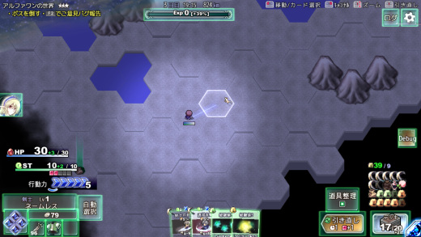
雪原、元気度減少が早まるのを今作でどう表現するかはまだ設定していません
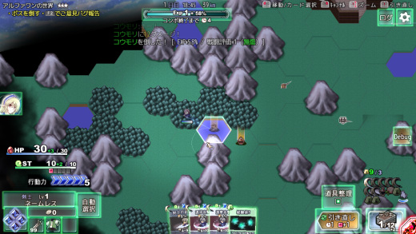
森ができるとちょっと片道勇者っぽい！
「敵」も同様に、前作にあった分のデータと画像を打ち込みました。
敵のスキルなどは今も実装の途中です。
（特殊なスキルは一つ一つプログラムしないといけないので少し大変です）
とはいえ、片道勇者はぶんなぐってくるだけの敵が多いので
これ自体の作業は少なめかもしれません。
あとは「街」と「ダンジョン」と「NPC住人」の作成と、地獄の「アイテム」実装！
特にアイテムもスキル同様、一つ一つ処理を組まなきゃいけないので大変！
とにかく前作から使えそうなアイデアはどんどんもらってきて、
一定のデータ量が一通りそろって1つ2つのクラスを遊べるくらいにしたあたりから
真のスタートになりそうです。
というのも、ここまで来るとゲームプレイの流れが現実化してきて、
これまで【未知】だった部分もどんどん確定し、
「絶対に【超】面白くなると思ってたけど、
このくらいの面白さにしかならないかあ……」とか、
「このシステム、ゲームの幅を拡張するのが意外に大変だー！！」
というのが見えてくる時期になってきます。
一方、これほど基礎ができていれば少しのコストでゲームを拡張していけるので、
アイデアをどんどん投入できる状態とも言えます。
といいますか、むしろ「アイデア量」のほうがボトルネックになってくる状態！
放り込めるいいアイデアが無限にありそうなのになかなか思いつかなくて
脳みそがカラッカラになるので、別の意味で大変になってくるでしょう。
それでも、ここまで来れば開発の面白さは最高潮です！
ゴールに向かって初心を忘れず、ワクワクを詰め込んでいきたいですね！■
2020-12-05 (土) 片道勇者2【48】 地形効果▼
やっと実装できたのでご報告！
『片道勇者2』では新たに「地形効果」が導入されます。
実際に動かした映像はこちら！
これで何が作れるかというアイデアは色々あって、
たとえば従来通りの「踏むと爆発する地雷」に加えて、
「地面が一定ターン炎上して、そこに立ってると燃える」
「数ターン後に予定のマスに矢の嵐が降ってくる」
「一定ターン有効な回復/防御マスを作る」
などといったことが実現可能だと見ています。
これを使えば、状況次第で「移動すべきか否か」、
「強引に攻めるか/無理してでも動かない方が有利か」
といった「択」の判断を作ることができるでしょう。
たとえば、強引に攻めることで「敵が作った回復マス」を奪ったりできると、
敵のアドバンテージを盗めた気になれてちょっと面白いかもしれません。
（あるいは引いて敵を回復マスから動かしたり）
前作では、戦闘中の移動を考えさせる要素は
「魔法の橋」などでほんのり入れようとしていたものの、
ほとんど実ゲームに関わってこなかったので、
今回はもっと色々取り入れていきたいと考えています。
せっかく2Dマップを取り入れてるんですからそれを最大限に活かしたい！
ということで開発も徐々に進めつつ、
来週の更新は『22周年』記念の【12/24】予定です！
22年って言われてみると結構長い！
みなさまのおかげさまで、こんなにも長く続けることができました。
これからもやれる範囲でやれることをしつつ、生き残る手立てをうまく打ちつつ、
最善を尽くしていこうと思います。
あっちもこっちもでリソースの分配はキリキリになっていますが、
この際なのでせめて楽しく生き残りたいです。■
2020-10-24 (土) 片道勇者2【46】 クラス案 前編▼
『片道勇者2』、データ搭載のための下準備もいくらか終え、
ようやく「データ作成」フェイズを進行中です！
ということで、今回は「クラス別の方向性」を固めたり、
クラス別の「スキル案」のアイデア出しをしたり、
それら新スキルに必要な「新機能」を搭載したりしていました。
フォーラムや拍手などでアイデアを送ってくださる皆さまもありがとうございます！
貴重な発想のエッセンスをいただいております！
「これやってみたい！」と思ったらありがたく使わせていただきます。
【クラス案！】
さて、クラス案です！
クラスをいきなり8種類くらい作ろうとしたら『Slay the Spire』をやりこんでる人から
「いやいやデッキ構築ゲームはたぶん1～2クラスくらいから作るのが定石ッスよ！
1クラスでもバランス取り大変そうだからいっぱい作ろうとするのは超ヤバいっすよ！」
と言われたので、最初から全部は実装せず、少しずつ作っていくかもしれません。
今回お話しするクラス案が最終的にいつ実装されるか、
最終的に本当に搭載されるかは置いておいて、
現時点では搭載クラスを全9つくらいでぼんやり考えています。
ということで、今回は全9つ検討中のクラスのうちの、前半5つをご紹介！
【剣士】
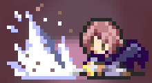
効果違いの攻撃スキルや攻撃補助スキルは山ほど思いつくので、
とにかくどんどん攻撃力の高さを目指せるクラスとして割と作りやすそうに思いました。
いつも通りの「ベルセルク」や、敵の攻撃力や防御力を下げる技、
武器耐久度を50消費して15倍ダメージ与える「ファイナルストライク」や、
回数制限ありで「なじみの武器商人」を召喚できるスキルなんかもあれば、
色んな意味で武器・攻撃技の扱いのプロとしての個性を活かせそうです。
おそらく好きな武器を使い続けられやすいようにすると思うので、
どれかの種類の武器に特化してデッキを作れば真価を発揮するクラスになるでしょう。
高い攻撃力で攻撃される前に倒していくタイプ。
【騎士】
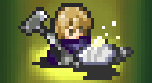
最低限の攻撃系スキルに、「防御系」スキルや「陣地構築」スキル、「盾の修理」、
ちょっとした「回復」スキル、「敵から受けた攻撃力でカウンターする」スキル、
騎士として「仲間を鼓舞」する能力など、こちらも色々と作れそうな気がしています。
他にも、騎士なら雰囲気的に「従者召喚」などのスキルも作れそうですし、
攻撃してくる住人を落ち着かせる「説得」スキルなども似合いそうです。
バトル系だけでなく、前作よりも色々と騎士っぽい文脈を取り入れられそうです。
今作は敵も1マス内に複数集まって襲ってくる場合があるので、
剣士より対多数に強いクラスにすると差別化を図りやすいかもしれません。
「槍（『片道勇者2』では1マス範囲攻撃＋壁貫通攻撃の予定）」を手に入れやすくして、
1マス範囲攻撃のプロにしても面白いかもしれませんね。
【海賊】
前作は海賊らしさが初期装備と水移動と
闇ギルドにくらいしか活かせていませんでしたが、
今回は使用回数制限付きのスキルや、たまにしか使えない攻撃スキルも作りやすいので、
海賊っぽさを上げていきたいなと思っています。
「鍵を開ける」能力があるのはもちろん、
斧のような「重い攻撃」で活きるスキルが多かったり、
回数制限スキルで「水場」を任意に作れたり（前作の「泉の巻物」の弱い版みたいな）、
「脅迫」して手配度の上昇と引き換えに店の販売額を安くしてもらったり、
「部下の海賊」を召喚したり、「単発ピストル」を撃てたり、
「砲撃指示」をして数ターン後に指定地点に範囲砲撃させたりもできるかもしれません。
海賊っぽさを取り入れたアイデアを色々と使えそうです。
【狩人】
射撃能力が高いクラスで、たぶん今回も「敵の場所」が分かります。
「射撃」系スキルはもちろん、射撃能力を維持するために自前で「弓」を作れたり、
あとはいろいろな「罠」を設置したりする能力が中心になりそうです。
「タカやオオカミを召喚」して戦わせられるのも楽しいかもしれません。
距離を取るための「移動」スキルも必要でしょう。
前回は敵が見えても「逃げる」か「戦うか」の2択しかできませんでしたが、
敵の位置を察知して先に「罠」を仕掛けられるようになれば、取れる択が増えそうです。
罠を活かすなら、「飛んでる敵を地面に落とす」スキルなども
相乗効果が働きそうですね。
【理術士】
前作でも大量の種類のスキルを持っているので、
アイデアにはそんなに苦労しなさそうです。
「スキル発動に条件が必要（だが超強力）」「基本的に立ち止まって戦う方が強い」
という前提はそのまま維持するつもりです。
今作は、フォースを撃つのに必要な「集中」を
カードとして別に持たせるとやりにくくなるので、
「1ターン待機すると集中＋1」と
「フォース系のカードが手札に来るたびに集中＋1」という形にして、
「待機で集中をためることもできるがデッキ構成をうまくすれば
毎ターンフォースを撃てる」
といった形を目指したいと考えています。
（デッキ構築ゲーの知識がないと何言ってるか分からないと思うのでその場合はゲーム本編をお待ちください！）
たとえば、手札に「フォース系カード」がいっぱい来るようにデッキを組めば
必要集中3のフォースも毎ターンガンガン撃てますが、
アイテムなどをいっぱい持つと手札のフォースカードの密度が減るので、
「集中」がたくさん必要なフォースの連射が難しくなるわけですね。
使いこなせば前回同様に万能でしょうけど、デッキの構成や立ち回りには
非常に頭脳と神経を使うクラスです。
というのが前5つのクラスの方向性です！
この辺りのクラスは、普通といえば普通ぽいかもしれませんが、
戦闘を「カード」を使う形にしたおかげで「補給が容易」かつ
「回数制限も付けやすくなった」ため、
変わった効果やぶっ飛んだ効果のスキルも用意しやすく、
『片道勇者1』よりはそれぞれの職業として
さらに深く掘り下げた形にできそうな印象です。
職業ごとのアイデアは今後も膨らませていきたいと思います。
次回は残り4つのクラス案についてご紹介！ お楽しみに！■
2020-08-15 (土) 片道勇者2今どんな感じ？▼【片道勇者2今どんな感じ？】
長らくゲームパッド/キーボード対応という何のご報告もできないような作業ばっかり
やってたので続報が途絶えていましたが、ようやく再び前進し始めたので
現状をお知らせします！
●システムの下地はおおよそ完成！
アルファ1ではやりにくいところもあったゲームシステムですが、
あれからいくらか更新されました。
・キャラメイクなどいくつかの情報が（たぶん）シンプルになって見やすくなった。
（もっと詳しい情報はカーソルを合わせると見られるようになった）
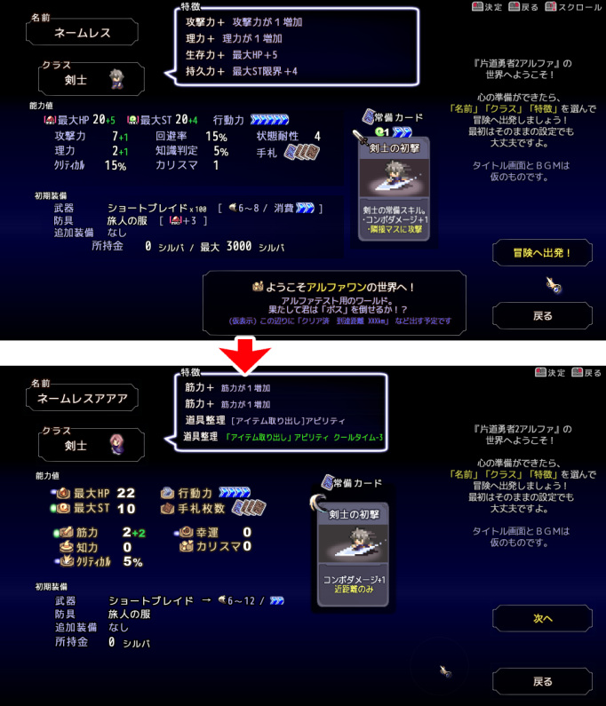
・マップ画面のインターフェースを大幅修正、
スマホ向けを一旦頭から消して完全PC向けに。
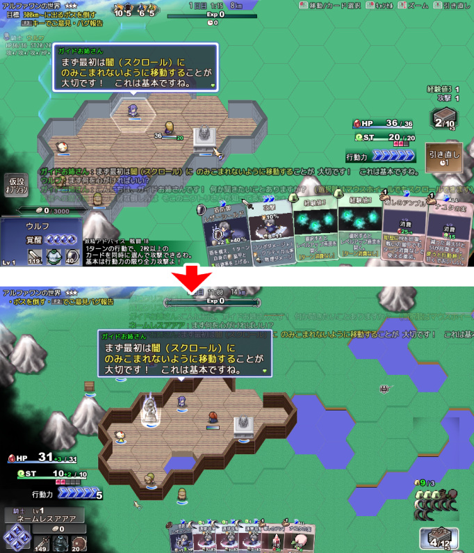
・レベルアップは「どこでも」から「（定期的に出てくる）女神像でのみ行える」
ように。
・移動中の経験値は（レベルアップ画面を使わず）、
直接、自己強化や回復に使えるように。
分かりやすくなったのと、手札が経験値だらけで
行動できないということがなくなりました。
・近くの建物の方角が分かるように。
（マップ機能はまだ入れてません、特徴などで使える形？）
・デッキ内容がアイコン表示で常に出るようになって
デッキを俯瞰（ふかん）しやすくなった。
・流れた経験値や、いらないアイテムを「女神ポイント」に変換できるように。
「女神ポイント」があると女神像で追加の願いを叶えてもらえる。
・どこでも使用できる能力「アビリティ」を搭載。
たとえば「アイテム取り出し」アビリティを「特徴」として取得すると、
マップ中どこでもすぐ好きなアイテムを取り出せるようになります。
（クールタイムあり）
・これまで重かった部分の処理を2～3倍くらいに高速化
（メイン処理の全オーバーホール）
といった感じです。実際に遊ばないと全然伝わらない点ばっかりですが、
とにかく自分でもアルファ1でやりにくいなと感じているところは
どんどんつぶしてスッキリ遊べる方向性を模索中です。
●念願のゲームパッド/キーボード対応ができた！
おかげさまで、なんとかゲームの90％以上を
ゲームパッド/キーボード/マウス全対応にできました。
ここしばらくは作業に着手できる時間が少なかったのもありますが、
ここの作業だけですでに半年以上経っている気がします。
もともとは自分にも何％かやれる可能性がある『スマートフォン展開』を
狙うつもりだったので「マウス操作だけでいいでしょ！」と思ってたんですが、
どうもスマホ移植は自分の技術的に無理くさいと分かったのと、
ウディタ作品の移植成功によって、今では逆に
「家庭用ゲーム機」の方が出せる確率が上がってしまったため、
スマホはいったんやめてPC/家庭用ゲーム向けに本格移行した形になります。
普段の私だったらコストパフォーマンス的に
こんなに時間をかけてまでやる項目ではないのですが、
家庭用の確率が10％でもあるなら今やっておかないと絶対厳しいことになるので、
長い時間をかけて少しずつ実装していました。
やってもやっても全然ゲームの面白さと関係ない場所は精神的に作るのがキツいですね。
また、終わってからようやく総工数の重さが分かりましたが、
こんなに工数がかかる（あるいは工数が不透明だった）ところをもし外注なんてしたら、
たぶん私の活動に必要なお金と比べてとんでもない工賃がかかったでしょう。
といいますか、そもそも工数が予測できるほどの達人はやってくれないか、
そうでなくともいくらかやっつけ仕事でいかないと赤字が出かねない部分だと思います。
まだまだキーボード/ゲームパッド対応は大雑把なので、
今後テストしていくにあたってやりにくいところを修正していって、
まるで最初からゲームパッド用のゲームだったように
見えるくらいに仕上げていきたいですね。
プラスにあった「自動方向転換機能」など、マウス操作だけだったら
不要だった機能もこれから追加していかねばなりません。
●アルファ1のカード絵を一通り作ってみて生産効率を確かめた。
カード絵の生産効率を確かめるべく、今の時点でアルファ1に登場したカードの絵を
全部ざっくり作ってみました。一部ですがこんな感じです。
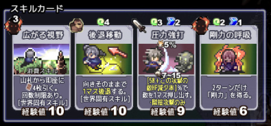
※文字が微妙にかぶってるところはこれから何とかしていきます。
今のところ、「後から修正したい……」という気分になる気配もなく、
かつ短時間で満足できるものが出せているので、
ドット絵をカード絵で描こうと思ったのは当たりだったようです。
低コストかつ最大効率を狙える素材作りをしていきたい！
●アルファ2は75～90％あたりで出したい！
今年中に公開したいなあ、と言っていた「アルファ2」ですが、
前のバージョンに比べると致命的な問題や遊びにくさは
予想以上に解消できた気がするので、このまま一通り完成させて
「システム面の拡張・修正はここまでだな！」
というのが分かった時点で「チュートリアル」も作り、
それらも含めて「ちゃんとゲーム内容が伝わるか」の部分まで
一気に見ていただく方がいいかな、と考えています。
全体の工期の75％～90％くらいで出す感じになるでしょうか。
『一通り揃ってこれ以上は大きく変わらないけど、
情報があればいくらか軌道修正できる開発状態』
で
『チュートリアルや情報提示で足りないものを把握するために、
思いつく限りの情報提供を一通りうまく入れた状態でお見せする』
あたりのタイミングを狙っていきたいと思いますので、
もうしばらくお待ちください。
家庭用ゲーム機の案件など、おかげさまで当面何ヶ月かの収入を得つつ
開発しやすい環境がようやく整ってきたので、
ここから開発のブーストをかけていきたいと思います。
今は久しぶりにゲーム部分を作っていける喜びをかみしめています。
Copyright © SmokingWOLF / Silver Second
 カテゴリ: 片道勇者2
カテゴリ: 片道勇者2 カテゴリ: 片道勇者2
カテゴリ: 片道勇者2